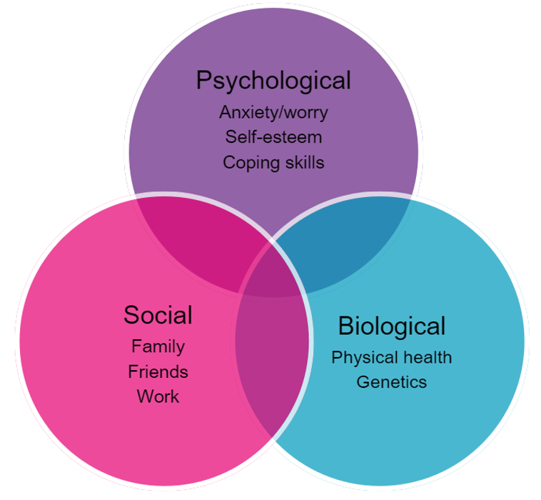
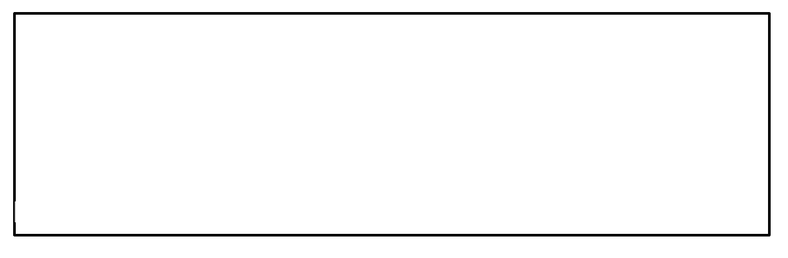

3 How does FND develop?
Recap
- People with FND can have lots of unpleasant and difficult psychological and physical symptoms.
- Sometimes, we avoid or overthink situations or environments because it can make us feel more comfortable in the moment. Avoidance in the long-run can make us feel worse and more ‘stuck’.
- These symptoms might make you feel ‘stuck’ in your life and unable to do the things that matter to you.
Why do people develop FND?
Functional neurological symptoms are caused by a combination of the following three reasons:
Psychological
Social
Biological
Psychological
The psychological reasons are to do with your thoughts and feelings. If you notice difficult or upsetting thoughts or feelings, they can make your physical symptoms worse.
Biological
The biological reasons are to do with what is happening in your body. If your parents have any health conditions, this can be passed down to you and might mean that you are more likely to develop them too. How fit and healthy you are, and how well you look after your health, also affects what is happening in your body.
The picture below shows how these social, biological and psychological reasons overlap with each other. In some cases, this can lead to the development of FND.

There is always a reason for developing FND.
You can also think about these reasons on a timeline:
- Things that have happened before your symptoms started
- Things that have happened at the time of your symptoms starting
- Things that have happened since your symptoms started
Let’s look into this further:
Things that have happened before your symptoms started
The kind of person that you are
We are all born with our own temperament (the natural way we respond to day-to-day things). This means that some people are more sensitive to stress than others. For example, their fight or flight, or freeze response may get triggered more easily (we will explain this further in module 4).
Some people are ‘performance-driven’ or perfectionists, and want to do really well at things, like their job. Whilst this isn’t a bad thing, focusing on other things in this way can mean you are not listening to your body and pushing through, even when you might be struggling. Others may want to help other people a lot.
The kind of people around you whilst you were growing up
We learn how to cope with stress before the age of 10 and this shapes our personality as we get older. For example, we learn coping strategies from the people around us. We learn and copy the way the people around us deal with things, such as stress and illness. We may learn to ‘just get on with it’, to suppress emotions, or to think that emotional or physical difficulties are a sign of weakness.
This might mean that we don’t learn how to look after ourselves or rest properly as adults.
Trauma
If you have experienced trauma at a young age, your nervous system becomes more sensitive to stress.
There are many different types of abuse (physical, sexual, emotional), but the most common one that causes FND is emotional abuse.
Emotional abuse is something that you may not have been aware of. Examples include regular criticism from a parent, high expectations from a parent, or having a parent who is struggling with mental health symptoms.
Have any of these things happened to you before your symptoms started? Or any other difficult life experiences that you think might be relevant?

Things that have happened at the time of your symptoms starting
The reason that functional neurological symptoms start at a particular time is because a person experiences a significant or a lot of difficult life events. Alternatively, there can be a period of ongoing stresses. These might be bereavement, relationship difficulties, loss of a job, or illness.
What happened in the build up to the development of your functional neurological symptoms? This might be more recent things or things that happened a couple of years ago.
Have any of these things happened to you around the time of your symptoms starting? Or any other difficult life experiences that you think might be relevant?
Things that have happened since your symptoms started
Once functional neurological symptoms start happening, the symptoms themselves become a stressor for many people, which contributes to why they keep happening.
Other ongoing difficult life experiences that also contribute:
Having problems at work
Relationship problems
Illness in the family
Ongoing emotional abuse
Not having a job
Worrying about money
Physical problems, like headaches or feeling sick
Not sleeping
Have any of these things happened to you since your symptoms started? Or any other difficult life experiences that you think might be relevant?
Now that you have thought about what has led to the development of your functional neurological symptoms and what is keeping them going, you will have a better understanding of why you experience them. Understanding why you experience functional neurological symptoms is really important so that you can work out how to reduce them.
Knowledge Check
- There is never a reason for developing FND. TRUE or FALSE?
- FND can be caused by psychological, biological and social reasons. TRUE or FALSE?
- Reasons for developing FND can be put on a timeline to help you understand when and where they might have come from. TRUE or FALSE?
- There is never a reason for developing FND. TRUE or FALSE?
FALSE, there is always a reason for developing FND. It is helpful to have a think about what these reasons might be for you because you are then able to reduce them.
- FND can be caused by psychological, biological and social reasons. TRUE or FALSE?
TRUE, psychological, biological and social reasons interact with one another, meaning one can have an effect on the other. Psychological reasons can be anxiety or worry, self-esteem issues or not knowing how to cope with things. Biological reasons can be your physical health or to do with your genetics (what is passed down to you from your parents). Social reasons can be to do with your family, friends or work situations.
- Reasons for developing FND can be put on a timeline to help you understand when and where they might have come from. TRUE or FALSE?
TRUE, reasons for developing FND can be:
- Things that have happened before your symptoms started
- Things that have happened at the time of your symptoms starting
- Things that have happened since your symptoms started.
Social
The social reasons are to do with what is going on around you. When things like relationships and work are going well, you feel more relaxed and less stressed.